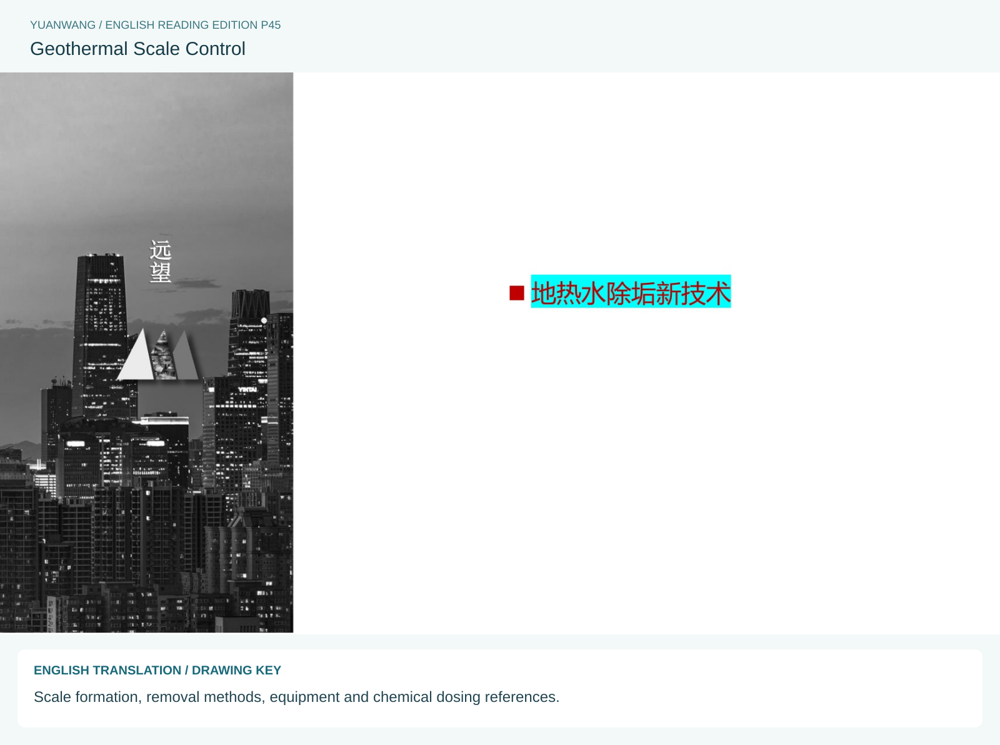
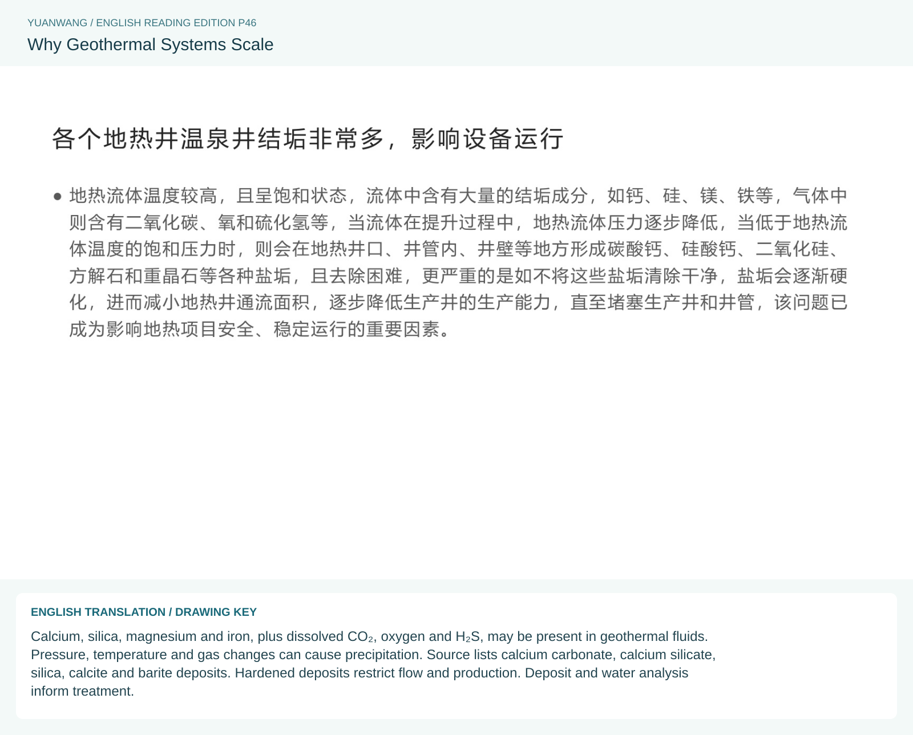
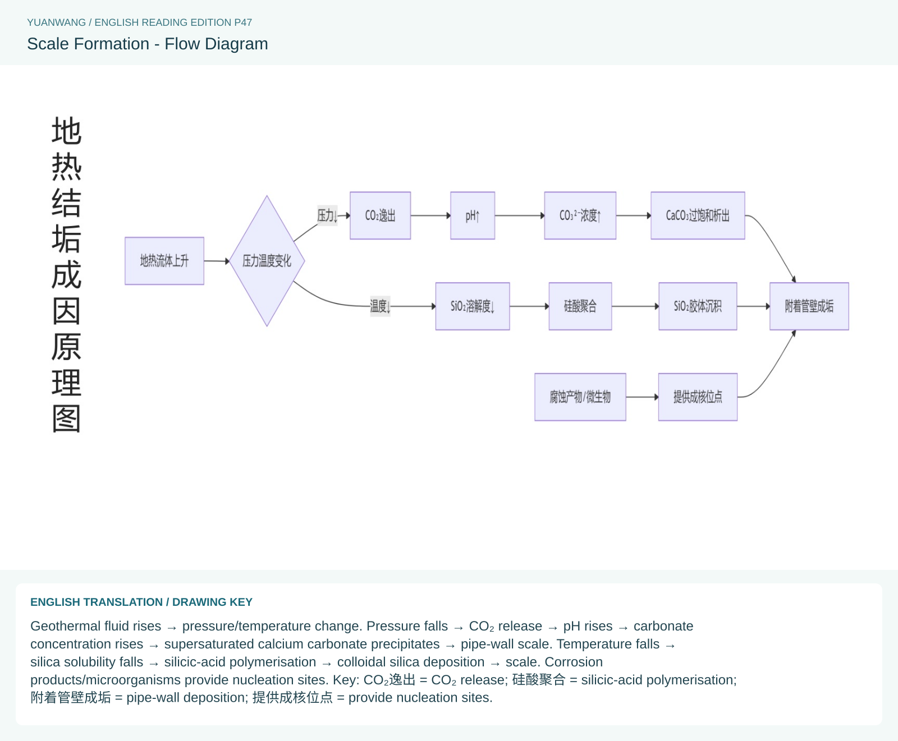
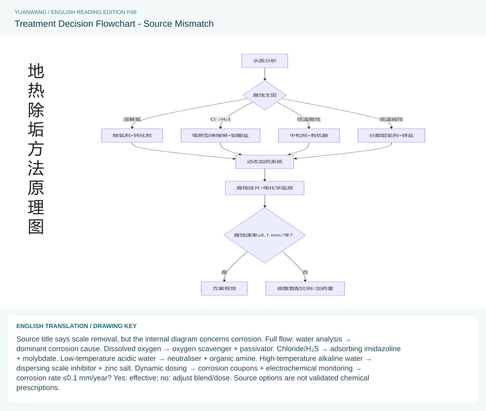
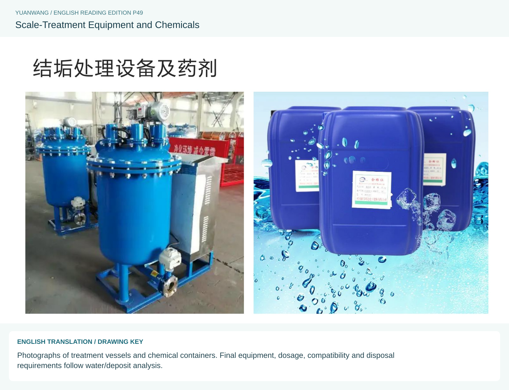

SOURCE PAGE 45 / 78
Geothermal Scale Control
Scale formation, removal methods, equipment and chemical dosing references.
View bilingual source plate and English drawing key

Select the plate to view the full-resolution reference.
YUANWANG · WATER & WELLNESS
English reading edition of source pages 45-49. Original reference plates are preserved with English explanations and drawing keys.
SOURCE PAGE 45 / 78
Scale formation, removal methods, equipment and chemical dosing references.

Select the plate to view the full-resolution reference.
SOURCE PAGE 46 / 78
Calcium, silica, magnesium and iron, plus dissolved CO₂, oxygen and H₂S, may be present in geothermal fluids. Pressure, temperature and gas changes can cause precipitation. Source lists calcium carbonate, calcium silicate, silica, calcite and barite deposits. Hardened deposits restrict flow and production. Deposit and water analysis inform treatment.

Select the plate to view the full-resolution reference.
SOURCE PAGE 47 / 78
Geothermal fluid rises → pressure/temperature change. Pressure falls → CO₂ release → pH rises → carbonate concentration rises → supersaturated calcium carbonate precipitates → pipe-wall scale. Temperature falls → silica solubility falls → silicic-acid polymerisation → colloidal silica deposition → scale. Corrosion products/microorganisms provide nucleation sites. Key:CO₂ release;silicic-acid polymerisation;pipe-wall deposition;provide nucleation sites.

Select the plate to view the full-resolution reference.
SOURCE PAGE 48 / 78
Source title says scale removal, but the internal diagram concerns corrosion. Full flow: water analysis → dominant corrosion cause. Dissolved oxygen → oxygen scavenger + passivator. Chloride/H₂S → adsorbing imidazoline + molybdate. Low-temperature acidic water → neutraliser + organic amine. High-temperature alkaline water → dispersing scale inhibitor + zinc salt. Dynamic dosing → corrosion coupons + electrochemical monitoring → corrosion rate ≤0.1 mm/year? Yes: effective; no: adjust blend/dose. Source options are not validated chemical prescriptions.

Select the plate to view the full-resolution reference.
SOURCE PAGE 49 / 78
Photographs of treatment vessels and chemical containers. Final equipment, dosage, compatibility and disposal requirements follow water/deposit analysis.

Select the plate to view the full-resolution reference.